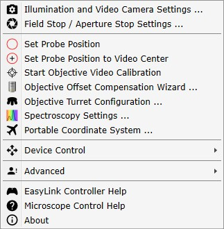
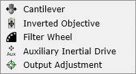

|
菜单
|

照明与摄像机设置
打开照明/智能亮度和摄像机设置的详细设置。
视场光阑 / 孔径光阑设置
打开自动视场光阑 / 孔径光阑的详细设置 - 如果可用。
设置探针位置
可单击视频图像中的某处以定义新的探针位置。
可通过再次按下按钮或按下视频图像右下角的标签来关闭此模式。
将探针位置设置为视频中心
将当前探针位置设置为视频中心。
开始物镜视频校准
开始 物镜视频校准。每个物镜需要自己的校准。
物镜偏移补偿向导
打开 物镜补偿向导
物镜转塔配置
打开 物镜转塔配置
光谱设置
打开 光谱设置。
可移动坐标系
打开 可移动坐标系 对话框。
设备控制

悬臂梁
显示 悬臂梁定位 用户界面。
倒置物镜
显示定位 倒置物镜 的用户界面。
滤光片轮
显示更改 滤光片轮 位置的用户界面（SNOM 功能）。
辅助惯性驱动
显示辅助 惯性驱动 用户界面。此菜单项的名称根据配置动态设置。
输出调整
显示 激光输出调整窗口。
高级
仅供 WITec 支持团队使用：
光谱仪校准灯常亮
这将打开光谱仪校准灯，无论选择了哪个 WITec Control 配置。
在拉曼测量中使用激光滤光片
如果选中，在拉曼测量期间将耦合激光滤光片。仅适用于自动滤光片耦合器。
更换激光波长
可更改当前所选激光的精确激光波长。
显示激光功率校正因子按钮
如果启用，激光功率编辑框旁边将显示一个小按钮。
在那里可以定义一个激光功率校正因子，该因子将自动为每个激光存储。
显示 COM 参数
显示所有远程可控参数。
设置/移除悬臂梁激光光斑标记
设置或移除悬臂梁激光光斑标记。在 AFM 模式下可用。
添加自定义日志条目
允许在出现错误或不良软件行为时添加自定义日志条目/注释。这样可以更容易分析错误。
EasyLink控制器帮助
显示 EasyLink控制器 在线帮助（按钮分配）。
显微镜控制帮助
显示此 WITec CHM 帮助。
关于
显示程序信息，例如版本号、许可证、内存消耗。